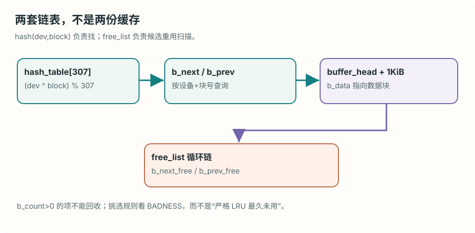
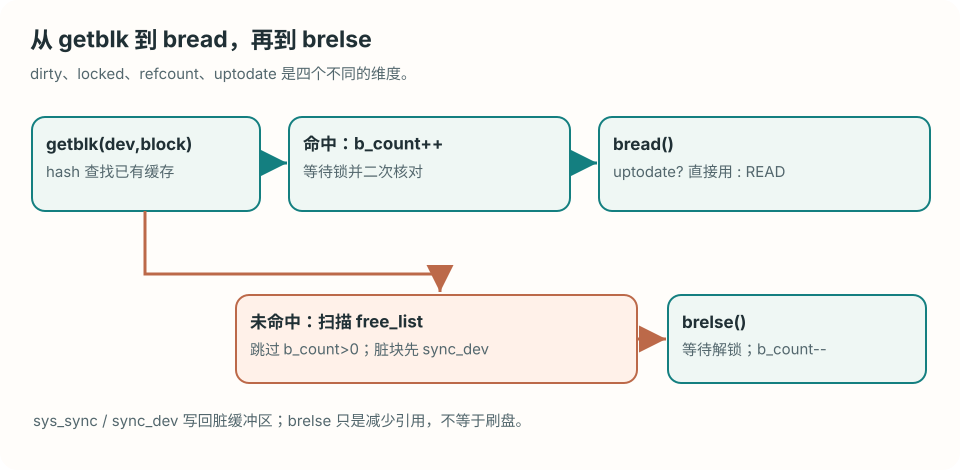

缓冲区缓存：1KiB 块、双链索引与脏块写回
把 buffer_head 看成一个带状态的共享对象：哈希链定位块、循环自由链选择重用者，锁与 dirty 决定是否能直接回收。
BLOCK_SIZE=1024 · hash / free_list为什么 getblk 不能总是新申请一块内存？
磁盘访问比在内存里读取数据慢得多；文件系统多次读取同一块时，没有必要每次都进行设备 I/O。但如果缓存既要通过设备号+块号快速命中，又必须在内存不足时复用一个没人在使用的缓冲区，就需要两套不同的索引结构。
Linux 0.11 的 fs/buffer.c 通过 hash_table[NR_HASH] 和循环 free_list 同时链接同一批 buffer_head。它不是“每块都独立分配 4KiB”，更不是现代 page cache 的完整实现。

buffer_head 包含的是一个 1KiB 数据块
include/linux/fs.h 定义 BLOCK_SIZE=1024、NR_HASH=307。buffer_head 包含指向数据区的 b_data、b_dev、b_blocknr、b_uptodate、b_dirt、b_count、b_lock、等待指针，以及两组前后链表指针。
| 字段 | 含义 | 不能误读为 |
|---|---|---|
b_data | 1KiB 缓冲数据区指针 | 整页 4KiB 数据结构 |
b_count | 当前引用该缓冲区的使用者数 | 物理页 mem_map 计数 |
b_lock | 块设备传输等期间的占用状态 | 可永久忽略的临时装饰 |
b_dirt | 缓冲内容已修改、需要写回 | 数据已经写入磁盘 |
b_uptodate | 缓冲区内容是否可信 | 一定来自磁盘或必然干净 |
buffer_init 从低端两侧布置元数据和数据块
buffer_init(buffer_end) 以链接器 &end 所在位置作为缓冲头数组起点，而数据区从给定的 buffer_end 向下每次减 BLOCK_SIZE 分配。每增加一块，就为其建立一个 buffer_head，并在两端尚未相遇时继续。它还处理 0xA0000–0x100000 一带的传统显示/设备内存窗口，避免将该窗口当作普通缓冲数据区。
if (buffer_end == 1<<20)
b = (void *) (640*1024);
else
b = (void *) buffer_end;
while ( (b -= BLOCK_SIZE) >= ((void *) (h+1)) ) {
/* h->b_data = (char *) b; */
/* 更新 h、NR_BUFFERS 和循环链表 */
}因此缓冲头从较低地址向上增长，数据块从较高的 buffer_end 向下增长，直到二者接近。这种构建方式不等同于调用现代 slab 分配器逐个创建对象。
hash(dev,block) 为什么还要二次核对？
哈希函数为 (unsigned)(dev ^ block) % NR_HASH，相同桶中可能有不同设备和块。find_buffer 沿 b_next 遍历并比较两个完整键。get_hash_table 找到后先让 b_count++，若缓冲区锁着则等待，随后重新核对设备与块号；因为睡眠期间其他路径可能修改缓冲区的归属。
NR_HASH = 307
def index(dev, block):
return (dev ^ block) % NR_HASH
print(index(0x301, 10))
print(index(0x301, 317))
# 命中同桶不等于相同缓存；还必须比较 dev 与 block为什么不能只用 hash_table[index] 判断缓存命中？（展开核对）
哈希取模存在冲突。两个不同 dev/block 键可能有相同索引，必须沿链检查 b_dev 与 b_blocknr 的完整相等性。
getblk 的回收策略不是严格 LRU
getblk(dev,block) 先尝试哈希命中。没有命中就沿 free_list 循环扫描，跳过 b_count!=0 的缓冲区，选择 BADNESS = (b_dirt<<1)+b_lock 更小者，碰到完全 clean/unlocked 的候选可以提前停止。这是按当前脏/锁状态挑候选的策略，不能在没有证据时叫严格 LRU。
选中候选后还要 wait_on_buffer；如果它正在使用就重试。如果它脏，则调用 sync_dev 并等待直到 dirty 状态消失。因为等待期间可能有其他线程创建目标块的缓存项，源码还会再次执行 find_buffer(dev,block) 避免两个缓存头指向同一设备块。

#define BADNESS(bh) (((bh)->b_dirt<<1)+(bh)->b_lock)
if (tmp->b_count)
continue;
if (!bh || BADNESS(tmp)<BADNESS(bh)) {
bh = tmp;
if (!BADNESS(tmp))
break;
}两组链表的维护分别位于 remove_from_queues 和 insert_into_queues。无论是命中还是重用，最终应满足“一个有效设备块只有一个缓存头”的不变量。检查代码时要特别关注睡眠后的重复检查，而不是仅看高层流程图。
bread：获取缓冲区并不保证内容已从磁盘读入
bread(dev,block) 先调用 getblk，若 b_uptodate 已为真就可以直接返回。否则调用 ll_rw_block(READ,bh)、等待传输完成，再次核对 b_uptodate。读取失败则 brelse(bh) 并返回 NULL。
if (bh->b_uptodate)
return bh;
ll_rw_block(READ,bh);
wait_on_buffer(bh);
if (bh->b_uptodate)
return bh;
brelse(bh);
return NULL;b_uptodate 与 b_dirt 是不同维度：一个说明内容是否有效，另一个说明缓冲数据有没有待写回的修改。因此“命中 hash”也不等于“块内容肯定有效”，还必须检查 uptodate。
brelse、sys_sync 与 sync_dev 的职责边界
brelse(bh) 先等待缓冲区解锁，接着减少 b_count，如果原本已经是 0 就 panic，并唤醒等待空闲缓冲区的任务。它不等于每次都强制把脏数据写回磁盘。写回逻辑在 sys_sync/sync_dev 这样的路径中检查 b_dirt，调用 ll_rw_block(WRITE,bh)。后者还要考虑 inode 元数据同步的顺序。
brelse(bh): wait_unlocked; assert(b_count>0); --b_count
sys_sync(): sync_inodes(); for each dirty buffer: WRITE
sync_dev(dev): flush dirty buffers of dev; sync_inodes(); flush again即使这些操作完成，也不能把历史磁盘/控制器的缓存刷新语义直接当成现代 fsync 持久性承诺。特别是在异常断电和设备写缓存问题上，本章只是说明 0.11 源码层面的提交路径，不声称做过硬件耐久性测试。
1KiB 缓冲区为何会与 4KiB 物理页关联
do_no_page 处理按需执行映像时会为一个 4KiB 物理页调用 bread_page(page,dev,b[4])。其内部取四个 getblk 的 1KiB 缓冲区，并行提交 READ 后再逐个等待并把有效内容复制到目的 4KiB 页。这恰好解释了两个数字：缓冲缓存块大小为 1024 字节，而内存分页粒度为 4096 字节。
BLOCK_SIZE = 1024
PAGE_SIZE = 4096
assert PAGE_SIZE // BLOCK_SIZE == 4图中一个 4KiB 页和四个 1KiB 缓冲块之间是加载转换关系，不是同一套物理页面管理数据结构，也不是说每个 buffer_head 只用于执行映像。
用源码定位证明两套索引与写回
grep -n 'NR_HASH\|BLOCK_SIZE\|struct buffer_head' include/linux/fs.h
grep -n 'hash_table\|free_list\|BADNESS\|getblk\|bread' fs/buffer.c
grep -n 'sync_dev\|sys_sync\|brelse\|buffer_init' fs/buffer.c
grep -n 'bread_page' mm/memory.c fs/buffer.c应能确认 307 个桶、1KiB 缓冲块、双向哈希链与循环 free_list、脏块同步以及四块拼一页的协作。此实验不会读取某一台机器的实际磁盘，也不代表在模拟器中测得缓存命中率。
下一阶段的源码入口
- include/linux/fs.h：真实 buffer_head、NR_HASH 与 BLOCK_SIZE。
- fs/buffer.c：hash/free_list、getblk、bread、brelse、sys_sync 和 buffer_init。
- mm/memory.c：do_no_page 和 bread_page 的协作。
- kernel/blk_drv/ll_rw_blk.c：块 I/O 请求的下一层入口。
下一章可以直接沿这些 buffer_head 去读 MINIX 文件系统的超级块、inode 和磁盘位图，将“拿到某个块”升级为“找到某个文件”。